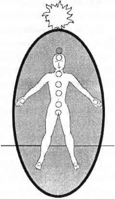

YEDİNCİ ÇAKRA TAÇ ÇAKRA
Bu menekşe moru, etki edici çakra başın en tepesinde sanki bedenin üstünde yüzer gibi durur. Bedenin dışında olan tek merkez çakradır. Yedinci çakra, saf spiritüel enerji ve bilgiyle bedensel olarak bağlantı merkezidir; bu, kendi yüksek spiritüel enerjimiz de olabilir, meleklerin ya da ruhani rehberlerin bilgi ve enerjisi de olabilir, şu anda bir bedende bulunmayan varlıkların ya da Tanrı bilgisinin enerjisi de olabilir. Yedinci çakra epifiz bezi ile doğrudan ilişkilidir.

Yedinci çakrada, bedenimize girmeden hemen önce zaman kabul ettiğimiz manevi niyetimizin ve genellikle karmaşık olan maddesel hayatımızın ana planları vardır.
Yaşamımızın büyük bölümünü beden ve ruh arasındaki karmaşada geçirdiğimiz için, saf yedinci çakra enerjisi genellikle görmezden gelinir, kapatılır, bağlantısı kesilir, çiğnenir ve hasara uğratılır. Şiddet ve bir yığın zırvalıkla dolu bu dünyada, salt beşinci çakranın taahhütleri ya da salt altıncı çakranın mantığıyla yaşamanın zor olduğunu düşünüyorsanız, siz daha hiçbir şey görmediniz derim. Yedinci çakra mutlak kesinlik ve mutlak niyetten oluşur. Saf ruhtur ve bu gezegende yedinci çakrada yaşamak saf cehennemde yaşamak demek olabilir.
Yedinci çakra bedende merkezlenmediği için günlük hayatın sıradan halleri ile çok az bağlantıdadır. Bu çakranın, yön, amaç, spiritüel yolculuklar, ruh eşleri ve yaşam ile ilgili bilgileri elzem olduğu halde bu gezegendeki insanların yüzde doksan sekizi tarafından anlaşılmaz. Yedinci çakra sanki yalnızca bir avuç uzmanın anlayacağı ölü bir dili konuşmaktadır. Dengesiz bir çakra sistemindeyse, zaman mekan bütünlüğünden bahsetmez bile. Sahip olduğu spiritüel bilgi, sıklıkla geçerliliği olmasına karşın, ne zaman hareket etmesi gerektiğini, neyi nasıl elde edeceğini, parayı nereden kazanacağını ve kiminle ilişkiye gireceğini bilmeye ihtiyacı olan insanoğluna gerçek bir uygulama alanı vermez.
Çok dengeli ve uyanık bir çakra sisteminde yedinci çakradan gelen bilgi filtrelenebilir ve bedenle iletişimi, mantıklı altıncı çakra aracılığıyla; İletişimci beşinci çakra aracılığıyla ve empatik kalp çakrası aracılığıyla sağlanabilir, ama o zaman bile bu bilgi garip ve bir başka dünyaya aittir. Çakralar dengeli ve faal olduklarında; enerji beden topraklanmış, arındırılmış ve koruyucu aurayla sarmalanmış haldeyken yedinci çakra bilgisi açık seçik (ama her zaman huzur verici değil) bir yön gösterir.
Enerji uzun, karmaşık bir nadas döneminden sonra dengelendiyse o zaman yedinci çakradan alınan bilgi ürkütücü olabilir. Yedinci çakra tekrar yolunuza devam edebilmeniz için gerekli olan çalışmadan haberdardır. Bu yol uzun zamandır taciz ve umutsuzluk içinde yaşayan insanlar için çok uzaktadır. Küçük bir kasabada dört çocuğunuz ve tacizci kocanızla yaşarken, yedinci çakranız size kaderinizin Kamboçya'da ya da alternatif bir doktora tezi hazırlamakta yattığını söyleyebilir. Bu da yedinci çakra bilgilerinin neden bu gezegende duyulmazdan geldiğinin küçük bir örneğidir. Pratik değildirler.
İşte size yedinci çakramdan gelen rahatsız edici bir mesaj: Pratik değil ha? Özel bir hayat amacıyla doğup da ergenlik çağına girer girmez amacını unutacak olmak mı pratik peki? Yeryüzüne ilk geliş amacını sürekli olarak unuttuğun için, yeryüzünde on tane, yirmi tane ömür boyunca çakılıp kalmak mı pratik? Varlığının ve benliğinin sınırlarını zorlayarak yaşamak yerine, küçük bir sıçan gibi o manasız meseleyi bu manasız deneyimi toplayıp biriktirmek için etrafı kemirip durmak mı pratik? Evet hangisi pratik?
Her canimin bir amacı ve anlamı vardır; her insan kendisini ve dünyanın belirli bir bölümünü iyileştirme yeteneğine sahiptir, ama kimse buna aldırış etmez. Yedinci çakra enerjisi Çin tıbbına ya da homeopatiye çalışmalarını sürdürmesi için cesaret verir ama hep mazeretlerle karşılaşır; mali sorunlar bahane edilir, vakit darlığı bahane edilir; hem de onca insan gereksiz yere acı içinde yaşayıp acı içinde ölürken.
Yedinci çakra enerjisi sanatsal yaratıcılığın en büyük savunucusudur ama yine sudan bahanelerle susturulur; yeteneksizlik mazeret gösterilir, cesaretsizlik bahane edilir ya da parasızlıktan dem vurulur; hem de çocukların zihinleri ve yürekleri nadasa bırakılmışken ve sanatın efendisi, votka reklamlarında harcanırken. Yedinci çakra, birbirinize yardım elini uzatın der, ama bu ses bastırılır; hem de insanlar “kabul edilemez” hastalıklar yüzünden yapayalnız ölürken ya ömürlerinin sonuna kadar yoksulluk içinde, ıstırap sürünerek yaşarlarken veya ev demeye bin şahit isteyen huzurevlerinde ömür tüketirken.
Yedinci çakra bilgisinin pratik olmadığı doğru değildir. Pratik olmayan bu gezegende yaşayan insanlardır, özellikle de bu spiritüel bilgiyi aşağıladıkları için. Bu gezegendeki her sorun için, yaratıcı güç sorunu çözebilecek on bin yaşayan insan vermiştir; yeryüzünü iyileştirmekte özel, pratik bir yeteneğe sahip olan, burada yaşayan insanlara, hayvanlara, bitkilere ve mineral varlıklara yardım edebilecek on bin insan. Bu insanların sadece yüzde onu olsun yardım eder mi yoksa kendilerini hayatın ne zor olduğuna dair on bin mazeretle mi sarmalar? Allah aşkına en azından çöplerini geri dönüşüm için ayırırlar mı? Hayır. Onlar sadece mazeretlerini geri dönüştürür ve güzelim dünya bu pratik uygulamalar altında ezilip dururken spiritüelliğin pratik olmadığını söylerler. Nutkun sonu.
AÇIK YA DA KAPALI YEDİNCİ ÇAKRA
Dengesiz bir sistemdeki çok açık yedinci çakra (13 santimetreden daha büyük) genellikle manevi yönünü tamamen yitirmiş bir hayat içinde ruhun nefes almak için çırpındığına işaret eder. Yedinci çakrası ardına kadar açık olan biri, topraklanmamış, korunmasız günlük hayatında ayakta kalabilmek için spiritüel dünyadan büyük bir yardım arıyor demektir. Böyle bir durumda beden/ruh çarpıklığı genellikle had safhadadır.
Yedinci çakra ardına kadar açık ve aşırı derecede ağırlaşmışsa ilk yapılması gereken kafanızın içinde topraklanmış ve güvenli bir biçimde sımsıkı çapalanmış bir oda oluşturmaktır. Yedinci çakrası hatalı çalışan insanlarda, yüzen odalar; duvarları ve tavanı olmayan odalar ya da sınırları belli olmayan, sis içinde ve kullanılmayacak durumda odalar gördüm. Her ne kadar bedeni topraklamak en az kafanın içinde kullanışlı bir oda yaratmak kadar önemliyse de, yedinci çakrası çok açık olan biri genellikle bedeninin dışında olduğu için topraklanması neredeyse imkansızdır. Bu durumdayken dikkati kafanızın içinde toplamak topraklanmaktan daha kolay bir ilk adımdır çünkü farkındalığı yedinci çakraya yakın bir noktaya merkezler. Kafanızın içindeki oda kullanılabilir ve topraklanmış olduğunda ruh bedene girmeye meyil gösterir ve böylece en azından birinci çakranın ve ayak çakralarının topraklanması mümkün olur.
Çok açık bir yedinci çakrayı kapayabilmek için diğer çakraları uyandırmak gerekir, özellikle de bedenin merkezindeki üçüncü çakrayı. Yedinci çakranız çok açıksa bu kitabı en baştan başlayarak tekrar okumaya gereksiniminiz olabilir ya da bütünlüklü bir çakra yorumlama/iyileştirme çalışması yapmanız gerekebilir. Çok açık bir yedinci çakra bütün ilginize muhtaçtır çünkü bu çakradaki sorunlar bedeninizin içinde kalmanızda ve topraklanmanızda zorluk çıkarır.
Dengesiz bir çakra sistemindeki yedinci çakra dengesiz durumdaki birinci çakradan gelen kundalini akınına karşı bir yardım çağrısıdır. Çok açık birinci çakra tehlike karşısında bedenin hayatta kalmasını garantileyen bir savunma sistemidir. Çok açık yedinci çakra ise spiritüelliğini yitirmiş bir hayatın tehdidi karşısında ruhun hayatta kalmasını sağlayan bir savunma sistemidir. Bu çakrayı iyileştirip tekrar kendi hayatınızı yaşayın.
Dengeli ve sağlıklı bir çakra sisteminde özellikle kalbin, beden ve ruh arasında mükemmel bir iletişim sağladığı durumlarda yedinci çakra spiritüel gerçeklik ve Tanrı ile bağlantıyı yenilemek için açılacaktır. Bazı durumlarda, kişi hayat amacına ulaştığında ancak bedeni henüz ölmeye hazır olmadığında yedinci çakra yeni emirler almak için açılacaktır; ya da yeteri kadar hayat dersi sözleşmesi yakıldıysa yedinci çakra, kuşbakışı olarak her şeyi gören sekizinci çakradan akan yeni bilgiye yer olduğunda da açılır. Yedinci çakra açıldığında ufukta daima yeni bir yön, yeni bir bilgi ve yeni bir amaç vardır. Hazır olun!
Yedinci çakranız açık olduğunda hem onu hem de diğer çakralarınızı topraklanmış nöbetçilerle önden ve arkadan korumayı ihmal etmeyin. Şayet özellikle açık kalmak gibi bir talebi yoksa bu çakrayı bir haftanın sonunda kapayın. Çakra sisteminiz dengeliyse yedinci çakra fiziksel zamanın anlamını bilecektir ve normal boyuta döneceği zamanı size bildirecektir. Bu zaman zarfında onu koruyun ve günlük hayatınızı düzene sokun. Yakın bir zamanda yolculuk planları yapmanız gerekebilir.
Sağlıksız ve dengesiz bir çakra sistemindeki sımsıkı kapalı ya da çok küçük bir yedinci çakra ruhu dinlemeyi, spiritüel dünyaya inanmayı ya da Tanrı ile iletişim kurmayı reddettiğinizin işaretidir. Kapalı ve zarar görmüş yedinci çakralar günümüzde özellikle entelektüeller, dindarlar ve tarikat üyeleri arasında çok yaygındır. Son iki grupta yedinci çakraya verilen zarar genellikle dışarıdan gelir; akıl yürütmeye karşı olarak gösterilen cezalandırıcı bir Tanrı inancıyla verilir. Çakradaki hasara genellikle din adamlarının ya da tarikat liderlerinin kontrolcü imgeleri ve bunlarla yapılan sözleşmeler neden olur.
Entelektüellerin durumundaysa, yedinci çakra hasarı içten kaynaklanır ve sözüm ona gözü kapalı kaderciliğe düşmemek adına isteksizlik sonucu oluşur. Entelektüel topluluklarda, sözgelimi ateistlerden oluşan gruplarda entelektüel üyelerle sadece izin verilen kalıp bilgilerin sınırlarları içinde kalınacağına dair sözleşmeler yapılır. Bu sözleşmeleri yakın.
Yedinci çakra kapandığında hayat sadece beş duyudan ibaret geçici bir deneyime dönüşür. Diğer çakraların sezgisel yetenekleri, sıradan, sıkıcı ve hayal gücünden yoksun bir hale gelir. Altıncı çakranın durugörü becerisi şanslı tahminlere dönüşür. Beşinci çakranın duruduyum becerisi sağduyunun sesi haline döner. Her şey sıradan, akılcı, açıklanabilir ve zevksiz olur. Spiritüel eşzamanlılığın harikulade deneyimleri bile sıradan tesadüfler ya da sık sık yaşanan değişiklikler olarak yorumlanır. Büyüleyici her yetenek kırıntısı sadece grubun kabul ettiği anlama seviyesine ya da sıradanlığa indirgenir.
Topluluğun baskısına ya da entelektüel önyargıya karşın yedinci çakrayı açmak hem cesaret hem de bir parça çılgınlık ister. Yedinci çakranın açılmaya başladığı ilk zamanlarda en sıradan şeyler bile büyülü bulunabilir; ki daha önce son derece sıradan bulunan büyülü şeylerdir bunlar. Yürürken bedeninizin hareketlerini büyülü bulabilirsiniz (Ayaklarınız kendi kendine hareket etmeyi nereden biliyor?) Yemek yerken maddenin enerjiye dönüşmesini büyülü bulabilirsiniz (Hücreleriniz akşam yemeğini yapı maddesi olacak şekilde parçalamayı nereden biliyor?) Televizyonunuz, arabanız ve bilgisayarınız sadece bir yüz yıl önce düşünülmesi bile imkansız mucizelere dönüşür. Çok değil, birkaç asır önce yaşamış kudretli imparatorlar birtakım özel törenlerde musluktan akan suyunuzu ya da sifonlu tuvaletinizi kullanabilmek için neler vermezlerdi! Bir düşünün.
Bu dünyanın her günü, her saniyesi sihirli, spiritüel ve anlatılamaz bir şekilde komplekstir. Dinin ve zekanın tüm dünyaya akılcı bir düzen getirebileceğini düşünürüz. Ama getiremez. Gerçekten mübarek bir insan tanıdıysanız ya da bir dahiyle karşılaştıysanız çocuksu bir merakla ve milyonlarca cevapsız soruyla dolup taştıklarını görmüşsünüzdür. Bilim insanları ve dini liderler çok şeyi açıklayabilirler ama her şeyi açıklayamayacaklarını bilirler. Hatta bunu yapmayı da istemezler çünkü onlar çok meşguldürler; evrenin bütün sırlarını keşfetmek ya da Tanrı’yı tümüyle bilmek için araştırma yapmakla, deney yapmakla, sorular sormakla ve yaşamakla meşguldürler. Engin bir zekaya ve engin bir maneviyata sahip insanlar basit sihirlerden ve mucizelerden ayrı düşmezler.
Eğer yedinci çakranız herhangi bir nedenle kapalıysa rasyonellik peşinde olabilirsiniz, ama yedinci çakrayı kapatmak rasyonelliği bulmanın yolu değildir. Rasyonellik, anlam, bağlantı ve amaç gerektirir yoksa gerçekler, sayılar ve bilgi asla birbirini tutmaz. Dördüncü sınıf bilim insanları bile çalışan bir teori olmadan deney yapmanın ve gerçeği aramanın anlamsızlığını bilir. Yedinci çakranızı kapattığınızda (ya da bir topluluğun kapamasına izin verdiğinizde) ruhunuzun anlamı, bağı ve amacı hakkında bilgi alabileceğiniz hiçbir yer kalmaz. Hepimiz hayatın anlamını ve Tanrı’nın sevgisini sadece bu iş için yapılmış bu kanaldan sağlayabiliriz. Bu kanal size ait çalışan yedinci çakranızdır.
Hiçbir şekilde dinlerin ya da entelektüel arayışların yanlış veya zararlı olduğunu söylemiyorum. Şu anda sadece zarar görmüş bir çakradan söz ediyoruz. Yedinci çakra açık ve sağlıklı olduğunda dini ve entelektüel arayışlar kendi iyileştiriciliklerini içlerinde taşır. Bir topluluğa katılmanın, eğer o topluluk iyi bir mürit olabilmek için yedinci çakra hasarı öngörmüyorsa hiçbir zararı yoktur. Eğer topluluk arasındaki iletişim ya da herhangi bir ilişki, çakraların, auranın veya benliğin zarar görmesini, budanmasını öngörüyorsa kötüdür. Değilse iyidir. Ötesine siz karar verin.
Yedinci çakranızın spiritüel yolu ve bilgisi bir toplantıda doğru görünmese ve bilimsel olarak ispat edilemese bile size tamamen rasyonel gelebilir. Kimi zaman İsa’nın, Buda'nın ya da size kim uygun geliyorsa onun öğretilerinin içinizde bir şey uyandırmasına karşın sadece size ait spiritüel bilgi sizin hayatınıza uygundur. Tüm çakralarınızı açık ve sağlıklı tutun, onları dinleyin.
Sağlıklı bir çakra sisteminde yedinci çakranız üstünü başını silkelemek, eski mesajlardan ya da sözleşmelerden kurtulmak istediğinde kapanacaktır. Yedinci çakranızın tatile çıktığını diğer çakralarınızın sağlığına bakarak anlayabilirsiniz; özellikle beden/ruh birleştirici dördüncü çakraya ve durugörü yeteneği olan altıncı çakraya bakın. Yedinci çakranız kapalı olmasına karşın kafatasınızın içindeki baskı azalacak, kafanızın içindeki odada kalabilecek, auranız ve topraklama kordonunuz sağlam ve bütün olacaktır. Yedinci çakranıza dinlenme imkanı verdikleri için diğer bütün çakralarınıza birer teşekkür hediyesi verin. Yedinci çakranızın önüne ve arkasına en az yedi tane topraklanmış nöbetçi koyarak onu koruyun. Yedinci çakranızı bir hafta kapalı bırakabilirsiniz bu sürenin sonunda hala kapalıysa ne istediğini sorun.
Yedinci çakranız genellikle spiritüel inançlarınızın üzerinden giderek size neyin uygun olup olmadığını saptamanızı ister. Bu noktada spiritüel ya da dini sözleşmelerinizden bazılarını yakmanız size çok yardımcı olacaktır. Spiritüel bir bahar temizliğinden sonra yedinci çakramzı bir daha kontrol edin ve açılmak isteyip istemediğini sorun. Eğer istemiyorsa auranızın üst kısmını güçlendirmeniz de gerekebilir. Yedinci çakranızın önüne topraklanmış nöbetçiler koyarak onu geçerli olmayan inanç sistemlerinden koruyun.
Herhangi bir çakra tekrar açılmayı reddettiğinde hayatınızdaki herhangi bir şeyin sözleşmeyle ona bağlı olduğu anlaşılır. Oturun ve dikkatle kapalı ama sağlıklı yedinci çakranızı dinleyin. Tüm bir çakra iyileşmesi uygulayın ve o sözleşmeyi yakın!
SAĞLIKLI YEDİNCİ ÇAKRANIN ÖZELLİKLERİ
Yedinci çakra her kişi için belirli bir hayat amacı, spiritüel yol, şifa bilgisi ve Tanrı bağlantısı taşır. Yedinci çakra enerjisinin akmasına izin verildiğinde spiritüel bilincin en yüksek seviyesine; kendini bilmeye ulaşılır. Kendinizi dosdoğru bildiğinizde ve kendinize saygı duyduğunuzda, saygı çevredeki her şeye bahşedilir. Hayata ve Tanrı’ya saygı duyulur. Düşüncelere ve duygulara; kendi zamanlarında ve kendi dillerinde uzlaşmalarına saygı duyulur. Bedene, bedenin ihtiyaçlarına saygı duyulur ve hayatın her parçası spiritüel amacın özü, esası olarak kabul edilir.
Dengesiz bir sistemde açılan yedinci çakranın enerjisi kişiyi, normal insani etkileşimden uzak tutabilir ama çarpık olmayan sağlıklı bir sistemde açıldığında kişiyi fazlasıyla hayatın bir parçası haline getirecektir. Sağlıklı yedinci çakra insanları spiritüel yollarında yürürken aynı anda çalışabilir, para kazanabilir, çocuk sahibi olabilir, araba kullanabilir, yemek yiyebilir. Dünyada ve bedenlerinin içinde yaşarlar; yaşamlarını sürdürürken fakındalıklarını da sürdürebilirler. Zorluklar yaşarlar çünkü bu gezegende yaşamak zordur. Surat asarlar, hasta olurlar, ayaklarını yere vurup mızıldanırlar ama yollarında yürümeye ve işlerini yapmaya devam ederler. Kendi işlerini yapmayı sürdürmek isteyen kişiler için harika bir arkadaş ve eş olurlar ama varlıkları çevrelerindeki spiritüel materyali silkelediği için hayatlarını çoğunlukla yalnız geçirirler.
Dengeli bir yedinci çakra insanında karşıt düşünceler, güçlü duygular, sağlıklı bir cinsellik, mizah anlayışı, güçlü sezgisel yetenekler, ahmaklık ve tanrısallık bulunur. Dengesiz yedinci çakra insanlarındaysa genellikle sadece sezgisel yetenekler ve tanrısallık görülür. Bu denge yoksunluğu eninde sonunda kişiye çelme takacaktır, ama yüzlerce, binlerce mürit, bu dengesizliği yaşamaya çalıştıktan sonra; bu arada ruhani liderleri de dramatik bir biçimde çürüyüp gidecektir.
Gördüğünüz gibi her şey dengeye bağlıdır. Yedinci çakra enerjisi çok önemlidir ama her şeyi diğer çakralarınızın desteği olmadan bir başınıza yapmaya kalkarsanız topraklanmamış, güvensiz, insani olmayan belalara düşersiniz.
Bedeninizin içinde yaşadığınızda gerçek zamanda yaşayıp gerçek hayatın işlerini yaparsınız. Bu işler tüm yeteneklerinizin ve çakralarınızın desteğine gereksinim duyar. Mükemmel olmayan, sağlıklı insan bedenine sağlıklı yedinci çakra enerjisinin ilave edilmesi gerçek işleri güzel, anlamlı, eğlenceli ve mümkün kılar. Hem spiritüel hem de insan olabilirsiniz. Yapılabilir.